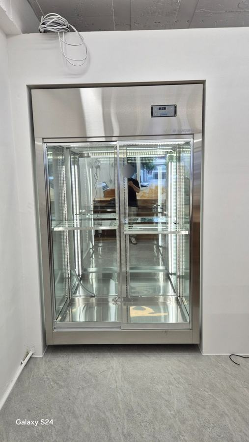
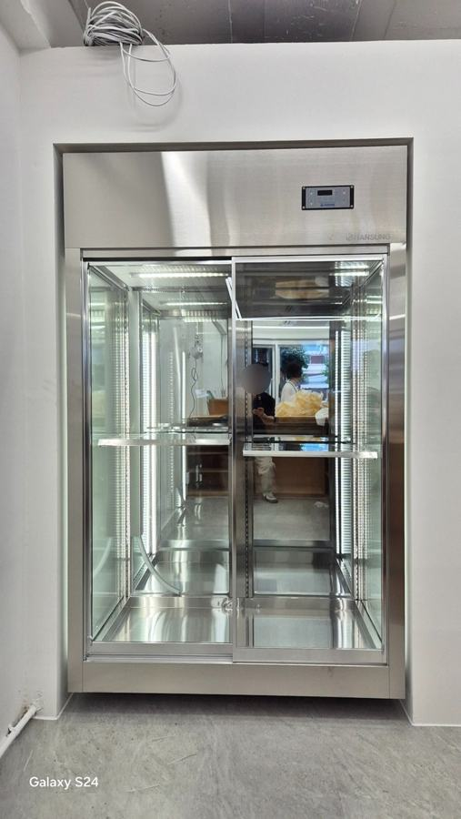
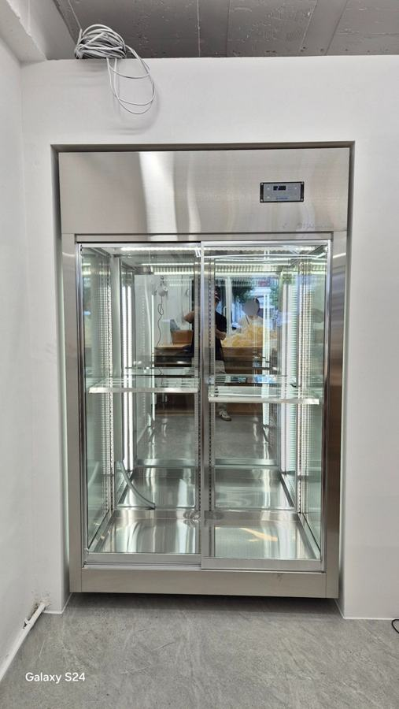
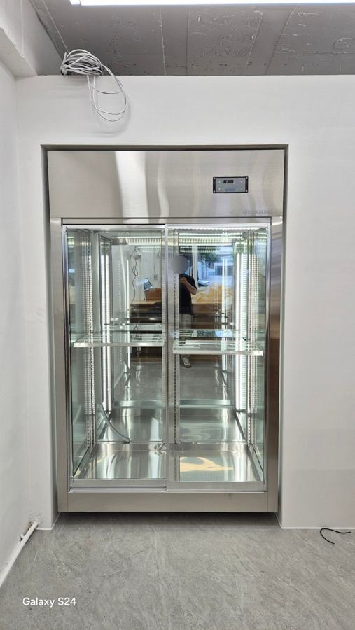

꽃냉장고
꽃냉장고 고르는법, 온도보다 바람과 습도를 먼저 보세요

꽃냉장고는 찬 바람이 꽃에 직접 닿지 않는 간접 냉각 방식인지, 습도를 유지할 수 있는지를 가장 먼저 보셔야 합니다. 그다음 물기에 강한 스테인리스 내장과 꽃 색을 왜곡하지 않는 주백색 조명인지 확인하시면 큰 실수는 피할 수 있습니다.
안녕하세요, 꽃집과 플라워 카페의 냉장 진열장을 만드는 한성쇼케이스입니다.
꽃집을 준비하시는 사장님들이 견적을 받다 보면 비슷해 보이는 냉장고가 너무 많아 무엇을 기준으로 골라야 할지 막막해지십니다.
용량과 크기만 비교하다가 막상 들여놓고 나서야 "꽃이 왜 이렇게 빨리 마르지" 하고 후회하시는 경우도 적지 않습니다.
생화는 꺾인 뒤에도 숨을 쉬고 수분을 내보내는 살아 있는 상품이라, 차갑게만 보관한다고 오래가지 않습니다.
같은 꽃이라도 어떤 바람을 맞느냐에 따라 수명이 달라집니다.
오늘은 꽃냉장고를 비교할 때 꼭 확인할 네 가지 기준을 순서대로 정리해 보겠습니다.
1. 냉각 방식: 바람이 꽃에 닿는지
사람도 에어컨 바람을 정면으로 맞으면 피부가 금세 마르듯, 꽃잎도 찬 바람을 직접 맞으면 수분을 빠르게 잃고 냉해를 입습니다.
일반 음료 냉장고는 내용물을 빨리 차갑게 하는 데 맞춰져 있어 이런 생화의 특성을 고려하지 않습니다.
그래서 꽃냉장고는 냉기가 꽃에 직접 부딪히지 않고 내부를 부드럽게 도는 간접 냉각 방식인지부터 확인하셔야 합니다.
매장에서 실물을 볼 수 있다면 손을 안쪽에 넣어 바람이 한 곳에 세게 몰리지 않는지 직접 느껴 보세요.
온도 편차도 함께 보셔야 합니다. 위아래 칸, 앞뒤 자리의 온도 차가 크면 같은 날 들어온 꽃도 자리마다 시드는 속도가 달라집니다.
- 간접 냉각 방식인지 사양을 확인하세요.
- 내부 바람이 한쪽으로 세게 몰리지 않는지 보세요.
- 칸마다 온도 차이가 크지 않은지 물어보세요.
2. 습도를 지킬 수 있는 구조인지
꽃이 빨리 시드는 원인은 온도보다 습도인 경우가 많습니다. 내부가 건조하면 줄기와 꽃잎에서 수분이 계속 빠져나가 탄력이 떨어지고 끝이 마르기 시작합니다.
꽃냉장고를 고를 때는 습도를 얼마나 유지할 수 있는 구조인지, 문을 자주 여닫는 영업 환경에서도 습도가 크게 흔들리지 않는지 확인해 보세요.
문 패킹이 꼼꼼하게 맞물리는지도 습도 유지와 직결됩니다.
꽃 종류에 따라 물을 많이 먹는 꽃과 금방 물러지는 꽃이 섞여 있어, 칸을 나눠 습도가 조금씩 다르게 유지되도록 배치하는 매장도 있습니다.
화병을 넣는 칸과 꽃다발 완성품을 두는 칸을 구분해 두시면 손님 응대 동선도 함께 정리됩니다.


3. 내부 소재는 물기에 강한지
꽃냉장고 안에는 화병과 물통이 늘 들어가 있어 바닥과 벽이 물에 닿을 일이 많습니다. 내장재가 녹슬거나 부식되면 위생 문제가 생기고, 진열된 꽃의 가치까지 떨어져 보입니다.
내외부가 스테인리스로 마감된 제품은 물에 닿아도 쉽게 녹슬지 않고 닦아 내기 편합니다. 바닥 배수가 어떻게 처리되는지, 물통을 꺼내고 넣기 편한 높이인지도 함께 보세요.
- 내장재가 스테인리스인지 확인하세요.
- 바닥 물기가 빠지는 구조인지 보세요.
4. 조명 색이 꽃 색을 바꾸지 않는지
붉은 기가 강하거나 지나치게 푸른 조명은 꽃 본래의 색을 왜곡합니다. 손님이 매장에서 본 색과 집에 가져가서 본 색이 다르면 실망으로 이어지기 쉽습니다.
햇빛에 가까운 주백색 LED 조명은 꽃 색을 자연스럽게 보여 주고 열도 적게 나서 꽃에 부담을 덜 줍니다.
조명이 꽃 바로 위에서 열을 내지 않는 위치인지도 함께 확인해 보세요.
뒷벽을 통유리로 만들어 매장 안쪽에서도 꽃이 보이게 하는 구성처럼, 꽃냉장고는 진열장이자 인테리어의 일부가 됩니다.
조명과 유리 구성은 매장 분위기와 함께 정하시는 것이 좋습니다.
체크리스트
- 간접 냉각 방식 여부
- 칸별 온도 편차
- 습도 유지 구조와 문 패킹
- 스테인리스 내장과 배수
- 주백색 LED 조명
현장에서 자주 보는 경우: 좋은 꽃을 들였는데도 빨리 시들 때
플로리스트 분들께 가장 많이 듣는 고민은 컨디션 좋은 생화를 들였는데 진열하고 나서 생각보다 빨리 시들거나 색이 변한다는 것입니다.
상담해 보면 원인은 꽃이 아니라 보관 환경인 경우가 대부분입니다.
특히 음료용 일반 냉장고를 꽃 보관에 쓰는 경우, 직접 닿는 찬 바람과 낮은 습도 때문에 꽃잎이 수분을 잃습니다.
아래 표처럼 냉각 방식, 습도 조절, 온도 편차에서 차이가 나기 때문에 꽃 전용 쇼케이스를 권해 드립니다.




| 구분 | 일반 냉장고 | 꽃쇼케이스 |
|---|---|---|
| 냉각 방식 | 직냉식 | 간접 냉각식 |
| 습도 조절 | 낮음 | 높음 |
| 온도 편차 | 큼 | 작음 |
자주 묻는 질문
음료 냉장고를 꽃 보관용으로 써도 될까요?
잠깐은 가능하지만 오래 쓰기에는 맞지 않습니다. 찬 바람이 직접 닿고 습도 조절이 안 되는 구조라 꽃잎이 빨리 마르고 냉해를 입기 쉽습니다.
꽃냉장고 조명은 어떤 색이 좋나요?
꽃 본래의 색을 살리려면 햇빛에 가까운 주백색 LED를 권해 드립니다. 붉거나 푸른 조명은 색을 왜곡하고, 열이 많은 조명은 꽃에 부담이 됩니다.
매장 벽면에 맞춰 크기를 정할 수 있나요?
가능합니다. 설치할 벽 폭과 높이, 주로 보관할 꽃의 길이를 알려 주시면 선반 높이와 문 형태까지 맞춰 제작합니다.
매장 조건에 맞춰 만드는 한성쇼케이스
원하시는 제품 사진과 설치할 공간 사진만 보내 주셔도 매장에 맞는 구성을 추천해 드립니다.
- 전국 240여 개 A/S 전담 센터 운영
- 본사 대량 자재 매입으로 품질 대비 합리적인 가격
- 유럽제·삼성 냉각 콤프레셔 적용
- 국내 최초 쇼케이스 전문 디자이너 상주
매장 폭과 원하는 진열 구성을 알려 주세요. 실측과 견적을 안내해 드립니다.
031-986-2458